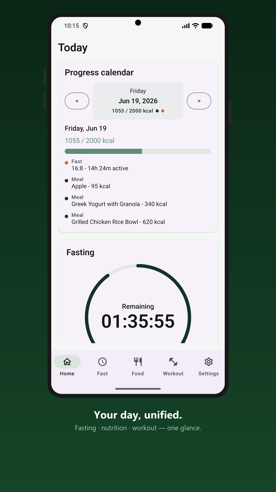
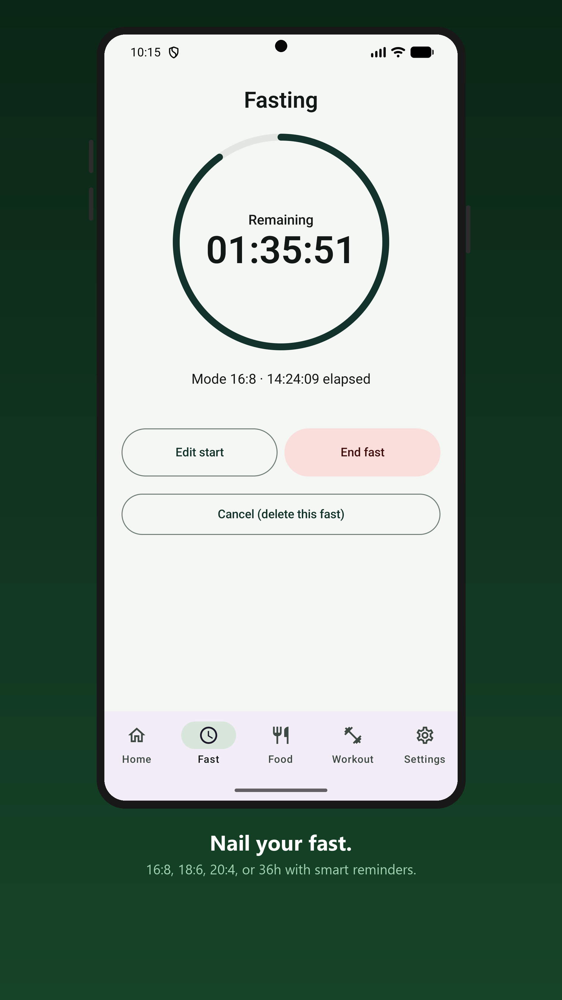
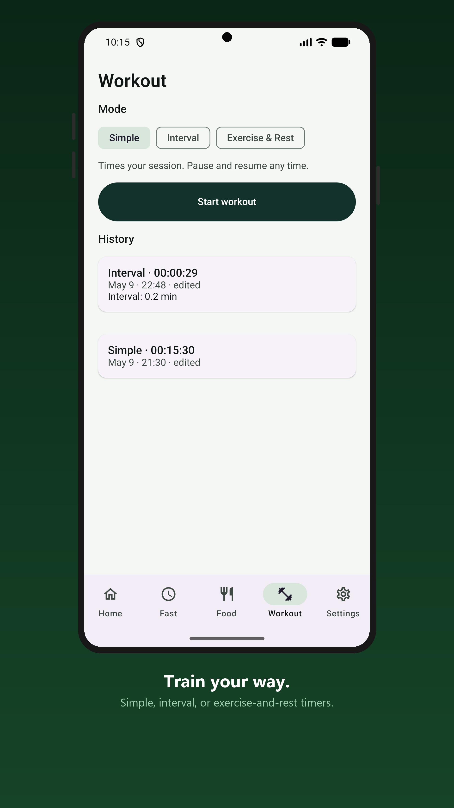

Everything in one app
An intermittent fasting timer, calorie and macro counter, weight tracker, and workout timer in one. No ads, no tracking, fully offline.
- Intermittent fasting timer with 16:8, 18:6, 20:4, and 36 hour modes
- State-driven fasting reminders instead of daily notification spam
- Food photo analysis using your own OpenRouter API key
- Manual meal entry and editable macro estimates
- Local calorie and macro goals
- Weight history with charting
- Simple, interval, and exercise/rest workout timers
- Dashboard for fasting, nutrition, weight, workout time, and streaks
- Daily journal notes on the progress calendar
Your data stays yours
Solo Forge is built around local data ownership. Nothing leaves your device unless you ask it to.
No backend
There is no server to send data to.
There is no server to send data to.
No accounts
Nothing to sign up for.
Nothing to sign up for.
No analytics
You are not being measured.
You are not being measured.
No crash reporting
No background phone-home.
No background phone-home.
Cloud backup disabled
Android auto-backup is turned off.
Android auto-backup is turned off.
One-file backup
Full backup/restore to a single file you control.
Full backup/restore to a single file you control.
Free and open source under GPL-3.0.
About the AI food analysis
The one and only optional network feature. When you start food photo analysis, that photo or text is sent to OpenRouter using your own API key. It is off until you set a key, and Solo Forge makes zero network calls otherwise. Everything else — meals, weight, fasting history, workouts, settings, exports — stays on your device.